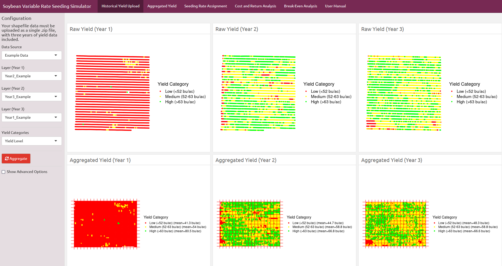

Digital Ops
Welcome! 👋
This is my Quarto website where I share the latest updates on my digital tools projects.
Let’s take a look!
R-packages
Open-access software promoting the reproducibility of data processing and analysis


Shinyapps

Web interfaces that facilitate the implementation of software and translate scientific knowledge into decision-support tools.
soiltestcorr app |
metrica app |
|---|---|
corny0N app
|
soybean-VRS simulator |

Harvard Dataverse Repository
Data and codes publicly available

YouTube tutorials
A couple of videos explaining the use of several of my tools
| Agro-meteorological data using R software | Regression Tress and Random Forests |
|---|---|
 |
 |